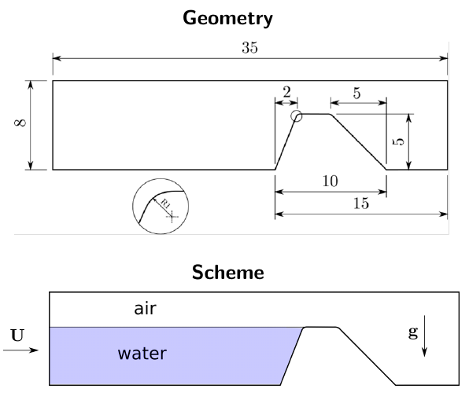
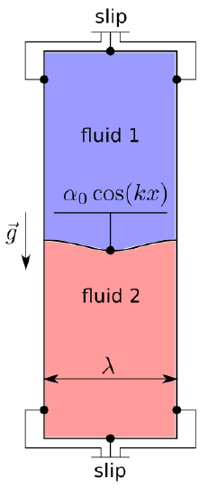

В связи с изменениями, внесёнными в OpenFOAM версий 2.3+ в численную схему для расчёта течений с межфазной поверхностью, важно понимать, каким образом правильно настроить параметры численной схемы в разных версиях программного комплекса и как эти настройки влияют на получаемое решение. Целью данного учебного курса является анализ настроечных параметров решателя interFoam для корректного решения задачи моделирования течения со свободной поверхностью.
Первая часть занятия представляет собой лекцию о внутренней структуре решателя interFoam и о математической модели, заложенной в нем. Во второй части занятия преподаватель вместе со слушателями выполняет тестовые задачи и анализирует полученные результаты. В качестве тестовых примеров рассматриваются задачи моделирования водосброса (Spillway) и неустойчивости Рэлея-Тэйлора (см. рис. ниже).
 
План учебного курса выглядит следующим образом.
Введение: актуальность задач моделирования течений со свободной поверхностью; обзор ключевых моментов учебного курса (почему основное внимание уделяется граничным условиям, используемым в OpenFOAM).
Описание математической модели течения жидкости со свободной поверхностью.
Обзор принципов работы и внутренней структуры решателя interFoam.
Описание базового тестового примера модели водосброса “Spillway”.
Этапы настройки и запуска базового кейса “Spillway” для решения задачи водосброса жидкости средствами OpenFOAM версии 4.1:
построение базовой сетки: утилита blockMesh и настроечный файл blockMeshDict;
формирование сетки для 2D-задачи в области с геометрией сложной формы: утилиты snappyHexMesh и extrudeMesh;
настройка граничных условий для гидродинамических величин (объёмная доля жидкости, скорость, давление);